Una sonrisa sana empieza con un buen diagnóstico
Realizamos un estudio completo de tu boca mediante exploración física, intraoral y radiografías, para la detección temprana y la rehabilitación estética y funcional.

Tratamientos dentales para toda la familia
Ortodoncia
Corrección de la posición dental y de la mordida mediante aparatos fijos o removibles.
Periodoncia
Prevención y tratamiento de enfermedades de las encías y del tejido que sostiene tus dientes.
Endodoncia
Tratamiento de conductos para salvar piezas dentales dañadas o infectadas.
Cirugía maxilofacial
Procedimientos quirúrgicos de dientes, maxilares y tejidos de la cara.
Prótesis dental
Reemplazo de piezas dentales perdidas para recuperar función y estética.
Blanqueamiento dental
Aclarado del color de tus dientes para una sonrisa más luminosa.
Así evaluamos el estado de tu boca
Se realiza una valoración sobre el estado bucal (patológico, funcional y estético) del paciente para la prevención, diagnóstico y tratamiento de enfermedades bucales.
- Exploración extra oral
- Exploración intra oral
- Valoración con cámara intraoral
- Radiografía periapical
Objetivo
Realizamos un estudio completo de la boca por medio de exploración física, intraoral y radiografías, para una detección temprana y una rehabilitación estética y funcional.